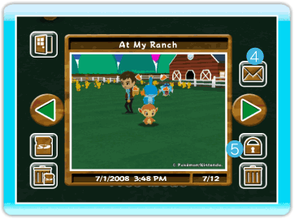
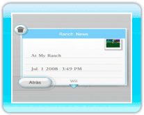

|
19
|
Album (álbum)
|
 |
|
Puedes ver las fotos que hayas tomado en la granja o
publicarlas en el Tablón de Wii. Puedes guardar hasta 20 fotos en el
Album (álbum). También puedes guardar tus fotos en una tarjeta SD. Album (álbum)
Si seleccionas Album (álbum) en el menú principal, se
visualizará una pantalla de álbum. Cuando quieras pasar a una foto
diferente, apunta a la flecha verde,  Back (atrás)
Salir de la pantalla Album (álbum). Save to SD Card (guarda en
tarjeta SD)
Guarda las fotos de My Pokémon Ranch en una tarjeta SD
(se guarda con el formato jpeg). Delete all pictures on SD Card
(borrar todas las fotos de la tarjeta SD)
Borra todas las fotos de My Pokémon Ranch guardadas en la tarjeta SD.  Post on the Wii Message Board (enviar al
Tablón de Wii)
Puedes publicar y ver las fotos en el Tablón de Wii. Secure (proteger/desproteger)
Puedes proteger o desproteger una foto. Cuando la protejas, esa foto no se borrará. Puedes proteger un máximo de 19 fotos. Delete (borrar)
Puedes borrar la foto que se visualiza actualmente. Notas acerca de tarjetas SD
|
 (izquierda/derecha),
(izquierda/derecha),  , o
, o  .
. |
 |
 |